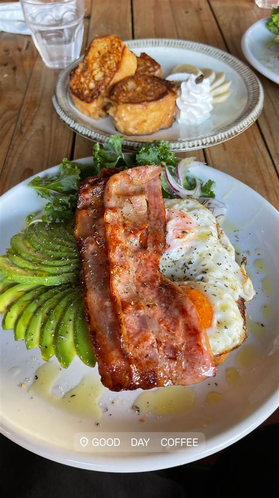

GOOD DAY COFFEE
元外国人住宅で朝6時から楽しむボリューム満点の朝食プレート
GOOD DAY COFFEE
北谷町出身の店主がオーストラリア滞在中に出会ったカフェ文化に惚れ込み、2016年に地元浜川で開いたコーヒー専門カフェ。元外国人住宅を改装した明るい店内で、朝6時から名物のボリュームたっぷりの朝食プレートが楽しめる。
TRIVIA
豆知識
- 店舗はもと外国人住宅を改装したもので、店内にはサーフボードが飾られハワイのような雰囲気
- 店名には「ここから良い一日が始まりますように」という意味が込められている
REVIEWS
世間の評判
3.45食べログ
人気の朝食メニューと朝の混雑
- アボカドトーストなどアメリカン朝食の質の高さを評価する声が多い
- 居心地の良い雰囲気だと評価する声が複数あるという意見がみられる
- 人気のため朝の時間帯は待ち時間が長くなるという指摘が複数ある
- 駐車場の台数が限られていて停めにくいという声も複数寄せられている
食べログ 口コミ197件
| 創業 | 2016年開業 |
|---|---|
| 看板 | GOOD DAY BREAKY（トーストにアボカド・ベーコン・目玉焼きをのせたボリューム満点のプレート） |
| こだわり | オーストラリア・バイロンベイの焙煎所から仕入れる浅煎りの豆を使用し、苦味よりもフルーティーな香りを楽しめるようエスプレッソで抽出する。 |
| どこから | 遠方 |
| 営業時間 | 月〜日 06:00-15:00 |
| 予算 | 昼 ¥1,000～¥1,999 夜 ¥1,000～¥1,999 |
| 定休日 | 無休 |
| 予約 | 予約不可 |
| 場所 | 北谷 沖縄県中頭郡北谷町浜川178-1 |
| メモ | 朝6時から営業しモーニング需要が高い。地元客・観光客ともに人気で日中も賑わう。 |
食べたもの：ベーコンエッグプレート
NEARBY
近い店・同じ系統の店
-
 ★
コーヒー 新宿三丁目
AALIYA COFFEE ROASTERS
37年続く本店譲りのフレンチトーストを並ばず味わえる
昼 ¥1,000～¥1,999 夜 ¥1,000～¥1,999
★
コーヒー 新宿三丁目
AALIYA COFFEE ROASTERS
37年続く本店譲りのフレンチトーストを並ばず味わえる
昼 ¥1,000～¥1,999 夜 ¥1,000～¥1,999
-
 ★
コーヒー 保田駅
音楽と珈琲の店 岬
鋸山の湧き水でコーヒーを淹れ、その水は店の外に持ち出せない
昼 ～¥999
★
コーヒー 保田駅
音楽と珈琲の店 岬
鋸山の湧き水でコーヒーを淹れ、その水は店の外に持ち出せない
昼 ～¥999
-
 ハワイ 美浜
808 Poke Bowls Okinawa 北谷店 & Hammerhead Shark Grill 808
ハワイの市外局番にちなむ名の生姜蜂蜜味噌ダレのポケ丼
昼 ¥1,000～¥1,999 夜 ¥1,000～¥1,999
ハワイ 美浜
808 Poke Bowls Okinawa 北谷店 & Hammerhead Shark Grill 808
ハワイの市外局番にちなむ名の生姜蜂蜜味噌ダレのポケ丼
昼 ¥1,000～¥1,999 夜 ¥1,000～¥1,999
-
 コーヒー 御成門・浜松町・大門
ル・パン・コティディアン 芝公園店
ベルギー発、1990年創業のベーカリーで東京タワー望むテラス朝食
夜 ¥3,000～¥3,999
コーヒー 御成門・浜松町・大門
ル・パン・コティディアン 芝公園店
ベルギー発、1990年創業のベーカリーで東京タワー望むテラス朝食
夜 ¥3,000～¥3,999
-
 コーヒー 中目黒・池尻大橋
スターバックス リザーブ ロースタリー東京
世界5番目・北米外初の旗艦店で隈研吾設計の17m銅製焙煎機がある
昼 ¥1,000～¥1,999 夜 ¥1,000～¥1,999
コーヒー 中目黒・池尻大橋
スターバックス リザーブ ロースタリー東京
世界5番目・北米外初の旗艦店で隈研吾設計の17m銅製焙煎機がある
昼 ¥1,000～¥1,999 夜 ¥1,000～¥1,999
-
 コーヒー 自由が丘
ONIBUS COFFEE 自由が丘店
奥沢発の人気豆、自由が丘初のカフェスタイル店でトースト
昼 ～¥999 夜 ～¥999
コーヒー 自由が丘
ONIBUS COFFEE 自由が丘店
奥沢発の人気豆、自由が丘初のカフェスタイル店でトースト
昼 ～¥999 夜 ～¥999